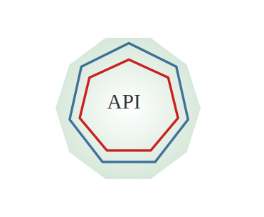
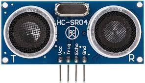
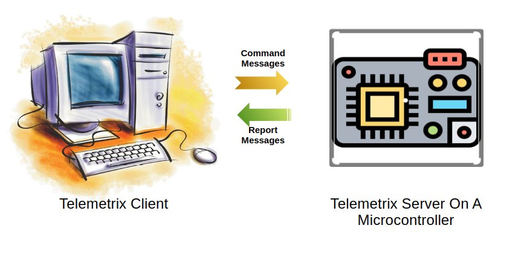

Telemetrix Under The Hood Part 5
Summarizing - Adding New Features
Let's quickly summarize the steps needed to add new features to Telemetrix.
Let's quickly summarize the steps needed to add new features to Telemetrix.

This post will explore the implementation of the Telemetrix Python client API for the Arduino UNO R4 Minima. To help focus the discussion, we will again use the HC-SR04 SONAR distance sensor feature as an example. Please search for the SONAR SIDEBAR heading to make the discussions about this feature easier to find.
Although this discussion is specific to the Arduino UNO R4 Minima client API, all Telemetrix client APIs are very similar, so you should be able to apply the information in this post to any other Telemetrix client API.
The Telemetrix framework aims to provide an experience as close to real-time as possible. To achieve this goal, a Telemetrix client implements concurrency and callback schemes.
Concurrency refers to a system's ability to execute multiple tasks through simultaneous execution or time-sharing (context switching), sharing resources, and managing interactions. It improves responsiveness, throughput, and scalability.
A Telemetrix client has three primary operations competing for the processor's attention.
Those operations are:
Concurrency allows the client to send command messages to the server while retrieving and buffering server reports and processing the buffered reports. All these operations are performed with minimal blocking to ensure the application is highly reactive.
Concurrency is implemented using one of two Python concurrency schemes.
For the TelemetrixUnoR4Minima threaded API, Python threading and a Python deque are deployed. A deque, which stands for double-ended queue, is a data structure that allows you to add and remove items from either end of the queue. It is thread-safe and part of the Python standard library.
For the TelemetrixUnoR4MinimaAio asynchronous API, Python asyncio is used to implement concurrency.
Let's examine the Telemetrix server code for the Arduino UNO R4 Minima,
Why select the server for the Minima and not another board?
The Minima is one of the newer boards in the Arduino family, so we chose it to highlight a Telemetrix server design. However, all Telemetrix servers are remarkably similar. The discussion below would be almost identical if any other server were chosen. Once you learn about one Telemetrix server, you are fully prepared to understand them all. This post will examine the file's structure, major data structures, and internal workings.

One main reason for understanding the internal workings of a Telemetrix server is to be able to add support for a new sensor or actuator.
To this end, the HC-SR04 SONAR distance sensor illustrates the areas of server code affected by adding sensor support. Adding actuator support is very similar to adding sensor support.
Why the HC-SR04? Because it highlights some of the finer points of adding a new feature, such as:
All these things will be uncovered as we proceed with the discussion. Search for the heading SONAR SIDEBAR to make the HC-SR04-specific discussions easier to find within the post.

A Telemetrix Python client and a Telemetrix microprocessor-resident server communicate by exchanging messages over a data transport link.
The type of transport link that is used is dependent upon the capabilities of the server hardware.
For example, this is a serial/USB link for the Arduino UNO R4 Minima. For the Arduino UNO R4 WIFI, Serial/USB, WIFI, and BLE links are supported.
Message creation, interpretation, and transfer are performed behind the scenes and are hidden from the application developer. Therefore, when creating your application, you need not be concerned with internal messaging details.
However, if you wish to extend Telemetrix's functionality, you will need to understand the details of Telemetrix messaging.
This posting will look at the two message types and their formats.
Over the past few years, I've been developing the Telemetrix family of libraries. These libraries, designed to facilitate microcontroller programming, allow you to control and monitor a variety of microcontrollers through a standardized set of Python3 client APIs and associated microcontroller servers written in C++.